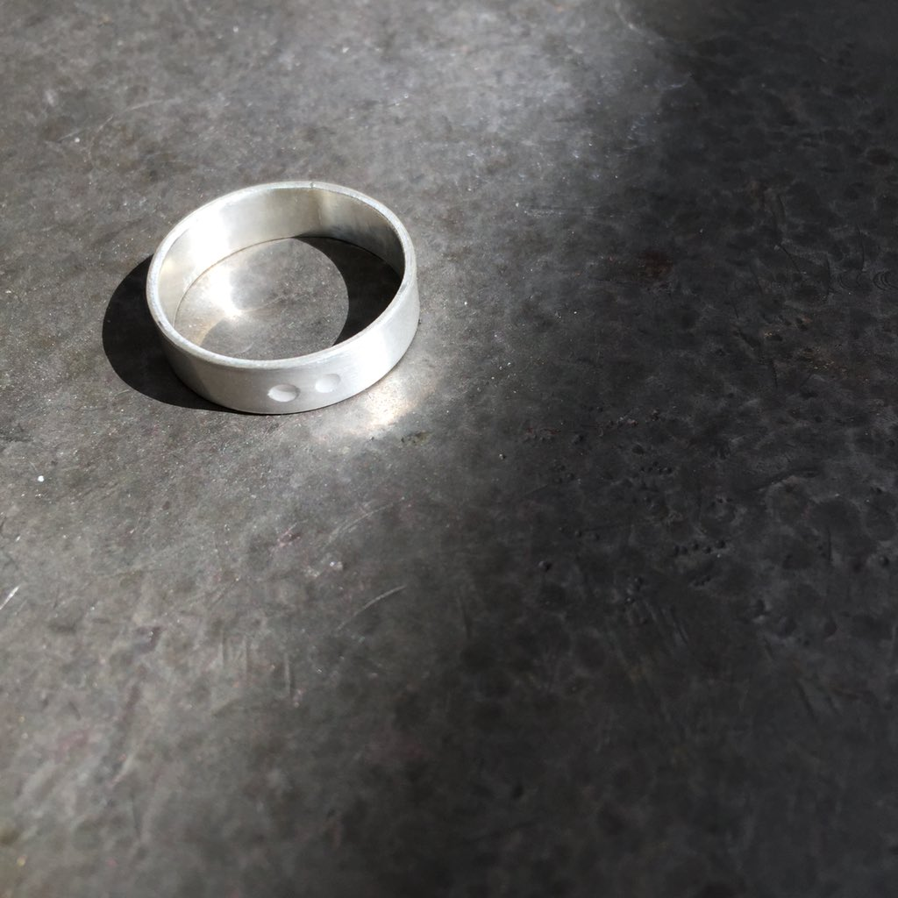
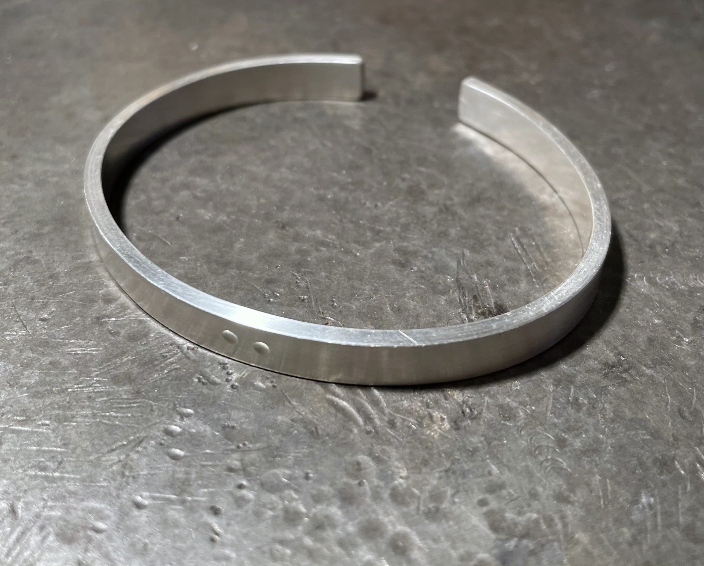

<html>

  <link rel="stylesheet" href="../popout stylesheet.css">
  <title>Jewellery</title>
</html>

<body class="page">
  <div class="overall">
    <div class="header">
    <p>Jewellery</p>
    </div>

    <div class="content">

      <p>I was inspired by my mother's jewellery practice to try to learn how to make a few simple pieces under her instruction. I'm excited to experiment more with different metal and jewellery techniques and ideas in the future.</p>
      <br>
      <br>
      <div class="twosplit">
        <p> Ring (Silver)</p>
        <p> 2021 08</p>
      </div>
      <br>
      </img>
      <br>
      <br>
      <p>A simple silver ring with a hand-punched two dot motif.</p>
      <br>
      <br>
      <div class="twosplit">
        <p> Cuff (Silver)</p>
        <p> 2022 01</p>
      </div>
      <br>
      </img>
      <p></p>
      </img>
      <p></p>
      </img>
      <p></p>
      <p>Following the ring, I was commissioned to create a simple silver cuff with a similar two dot motif.</p>

    </div>


  </div>
  <div class="footer">
    <p>: : Copyright © CALEB WOODWARD 2022 - All rights reserved. : :</p>

  </div>


</body>
